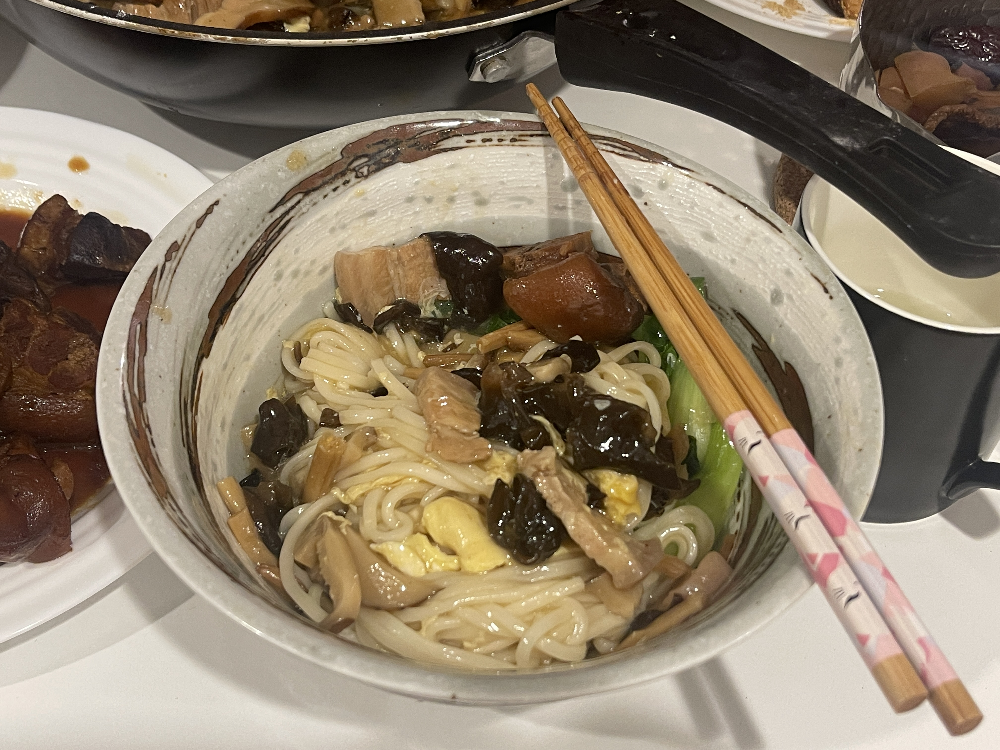
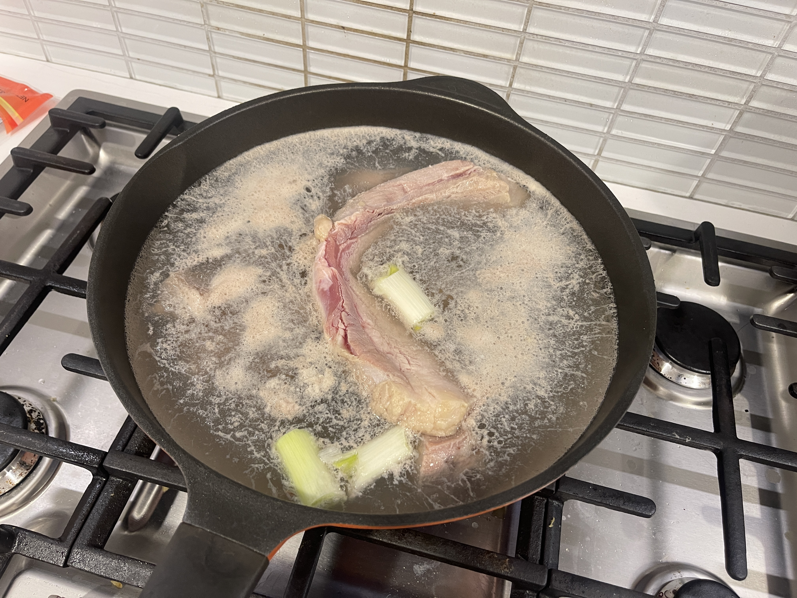
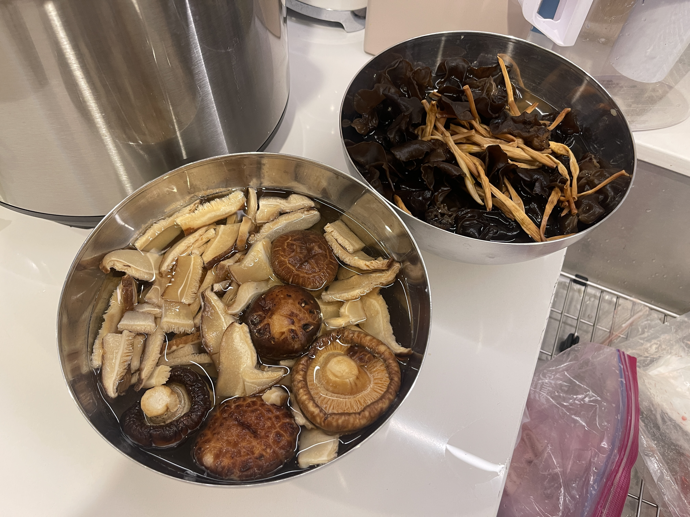
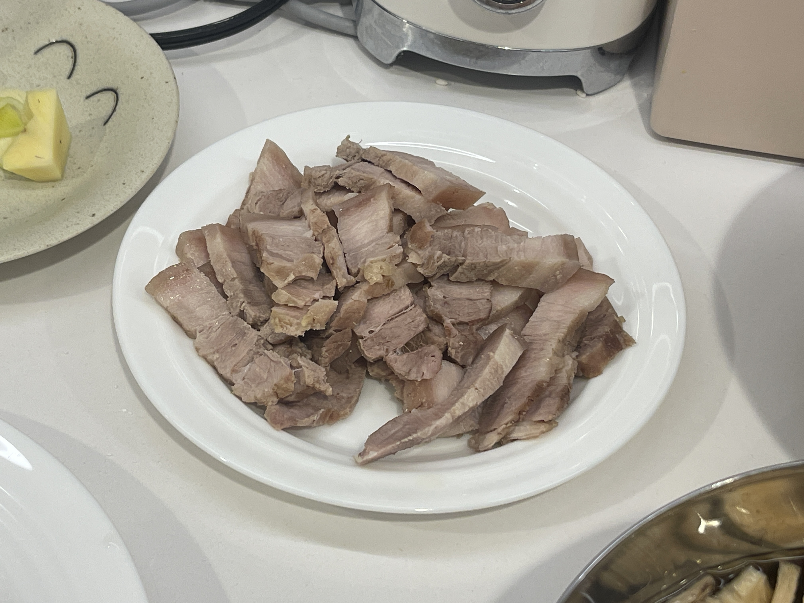
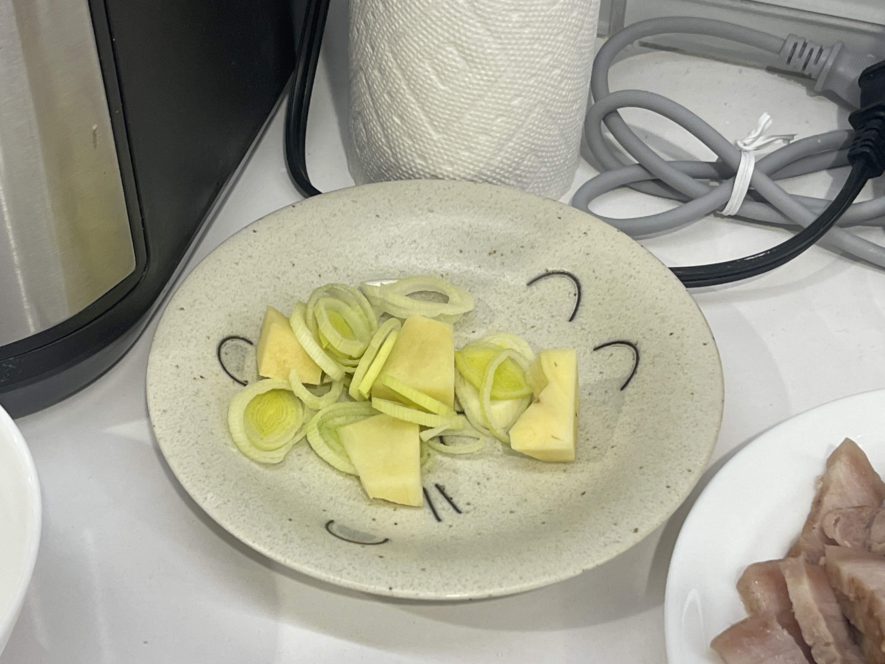
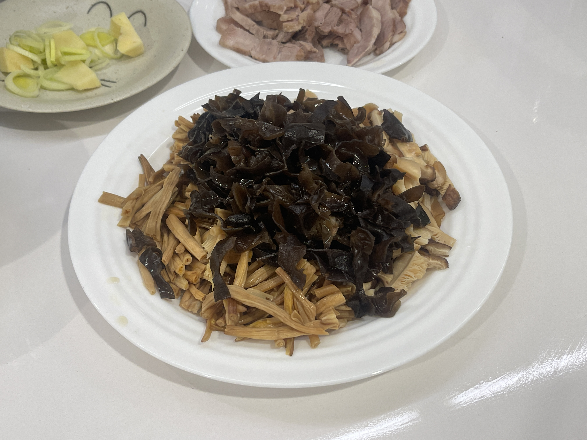
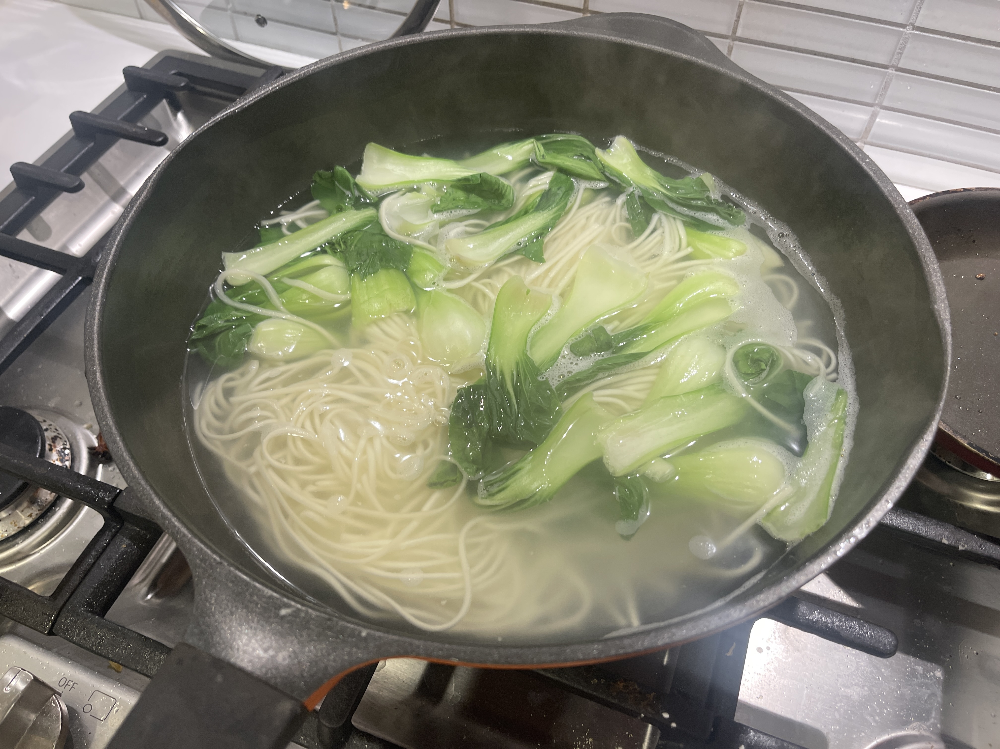
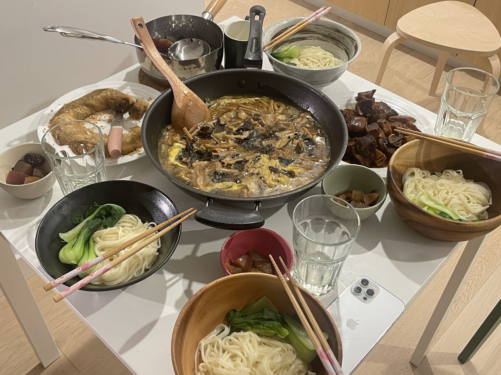

CORE I-INTERACTION

INGREDIENTS
Pork belly, dried shiitake mushrooms, dried cauliflower, dried fungus, egg, green onion, ginger, garlic, cilantro, garlic, salt, sugar, oil, soy sauce, light soy sauce, potato starch.
Beijing Braised Noodles
老北京打卤面
THIS DISH IS RECOMMENDED BY STEVE ZHAO
Beijing Braised Noodles used to be made for birthdays and festivals in the old days of Beijing, a practice that originated during the Qing Dynasty, when the city's many canals and waterways meant that many vendors operated along the water's edge. Braised Noodles originally featured wide noodles stewed in a marinade with a rich marinade and a variety of toppings.

STEP 1: Put the pork belly in cold water, add the scallions and ginger, bring to a boil, and skim off the foam.

STEP 2: Soak the dried shiitake mushrooms, dried yellow cauliflower and dried fungus in warm water.

STEP 3: Slice the blanched Pork belly.

STEP 4: Chop up the new scallion and ginger.

STEP 5: Cut the soaked dried shiitake mushrooms, dried fungus and yellow cauliflower into small pieces.

STEP 6: Heat more oil in a wok, add onion and ginger, saute and pour in the mushrooms, yellow cauliflower, fungus and pork belly. Add the water in which you soaked the mushrooms.

STEP 7: Bring the water to a boil and add the noodles and bok choy.
